1Put the book on your Home Screen
If you already have the book’s icon on your phone, skip this.
iPhone
- Open the book’s link in Safari.
- Tap Share (the square with the arrow), then Add to Home Screen, then Add.
- From now on, open it from that icon. That’s also the only way an iPhone will let it send you notifications.
Android
- Open the link in Chrome and tap Install when it offers, or ⋮ then Add to Home screen.
2Say who you are, and make your PIN
The book asks everyone this the first time it opens. Refs and the commissioner sign in with their PIN instead.
Tap your name
Players are at the top, refs next, then the gallery: everyone here at the resort who isn’t playing. That list is everyone on the trip. If your name isn’t on it, you’re in the bleachers: see step 3.
Your name goes on everything you post and bet. The phone remembers it, so you only do this once.
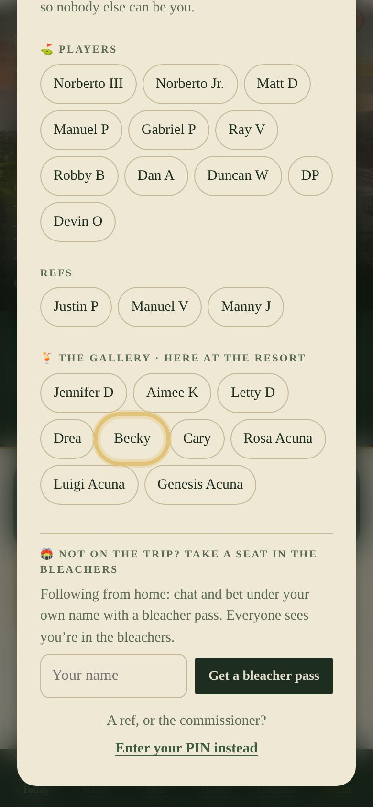
Make a four-number PIN
- Type it, then type it again, and tap Save my PIN.
- It stops anyone else posting or betting as you. On a new phone, you’ll type it to be you there too.
- Pick numbers you’ll remember, and not your bank PIN.
- Forgotten it? The commissioner can look it up for you.
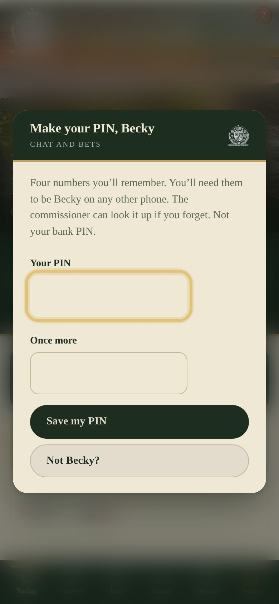
3Following from home? Grab a bleacher pass
Not on the trip, but want in on the fun? At the bottom of the same window, type your name and tap Get a bleacher pass.
- You can see every score, photo and board, chat, react, heckle, and bet with the same beers as everyone else.
- Scores stay with the refs, as always.
- Only the people on the trip are in the list above. Everyone else types their own full name: a first name on its own that matches someone on the trip (“Matt”, “Justin”) won’t go through.
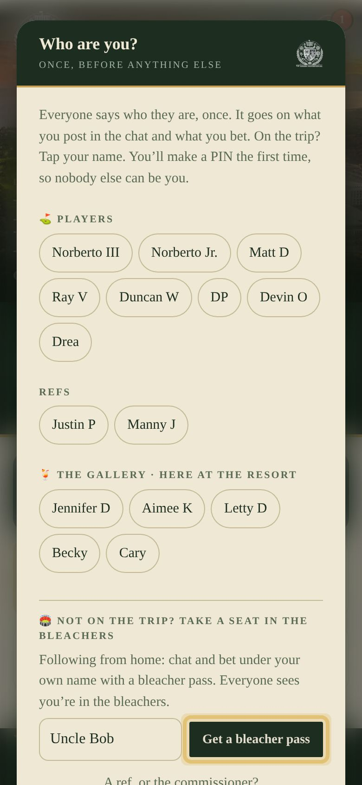
4Who’s who
A small tag after every name in the chat and the bets says who you’re talking to.
5The chat
The round button, on every screen
The gold-ringed chat button sits in the corner of every screen except Scores. A red number means there’s something you haven’t read, and new lines slide out beside it.
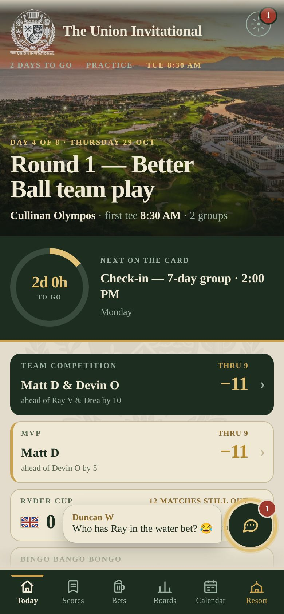
Say something
- There’s one chat per round, and one for the trip. It opens on today’s.
- Tap the box to type, then Post. The keyboard only comes up when you tap the box.
- Call someone out: type @ (or tap the @ button) and a few letters, then tap their name. They get a buzz of their own.
- Answer a particular message: tap ↩ Reply under it. Your reply shows their line above yours, and they get a buzz.
- Swipe the chat down, or tap above it, to close it.
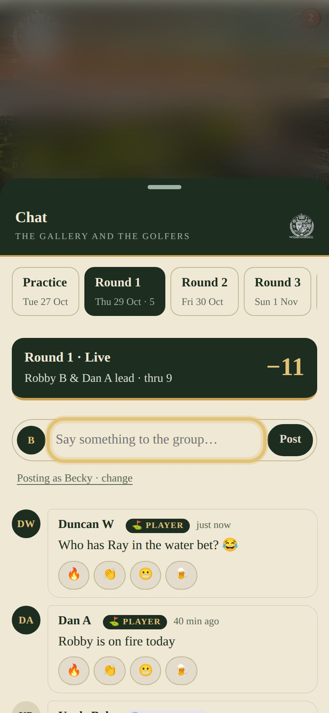
React and heckle
- The book posts by itself as the refs save holes: birdies, balls in the water, three-putts, the turn.
- Tap an emoji to react: 🔥 👏 😬 🍺.
- Tap Heckle to put your line under that moment.
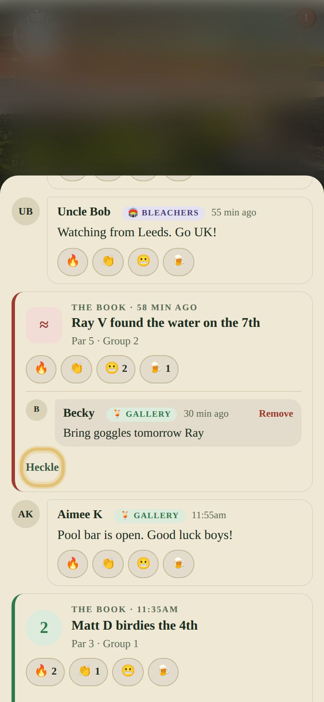
6Get a buzz when someone posts
At the top of the chat you’ll see this. Tap Turn on, then Allow when your phone asks:
- You also get one when someone @’s you, replies to you, reacts to your message, or puts a bet on you.
- Tapping a notification opens the book on that chat or bet.
- iPhone: this only shows when the book is opened from its Home Screen icon (step 1).
- Too much? Turn it off in the same place.
7Bets, all in beers
House rules
- Nothing here is money. Everyone gets 20 🍺 a day to bet with.
- The chance is the price. The less likely the thing you back, the more it pays. A ¼ 🍺 on a 1% long shot pays about 18 🍺.
- Bets go on in quarter beers: ¼, ½, ¾, 1…
- The book’s bets settle themselves from the scores and the refs’ marks. Bets you make, you or the commissioner settle. Everyone sees who and when.
- “Sharpest in the group” shows who’s up on the week: tap a name to see their bets. Settle up at the bar.
The Bets tab
It’s on the bar along the bottom, between Scores and Boards, and it opens on today’s round. Tabs along the top keep everything in its place:
- The week: MVP, the teams, the Ryder Cup, hole in one.
- Round 1, 2, 3: each round’s own bets. The live one has a red dot.
- Off the course: the pool, last one standing. Ours: the bets the group makes.
Settled bets stay at the foot of their tab. Tap a name in the About row to see every bet about that person.
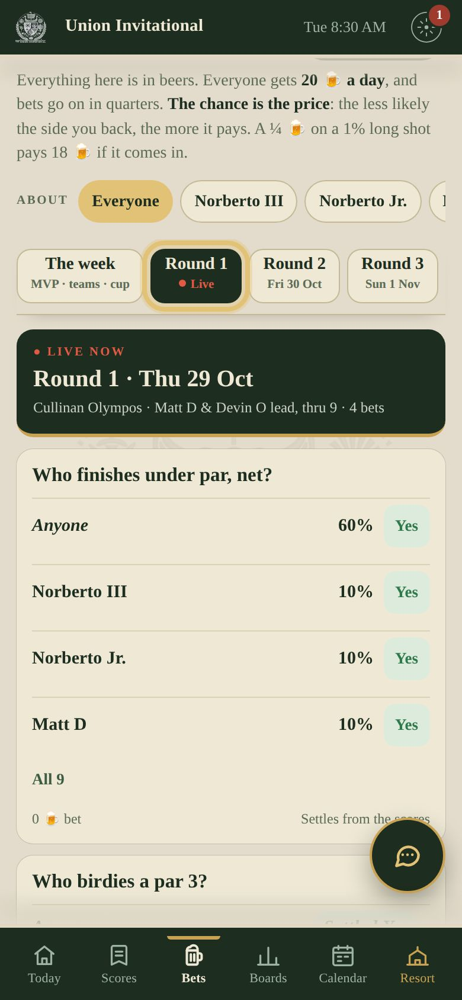
Back someone
Ray V for the water in Round 2 at 17%? Tap Yes on his row.
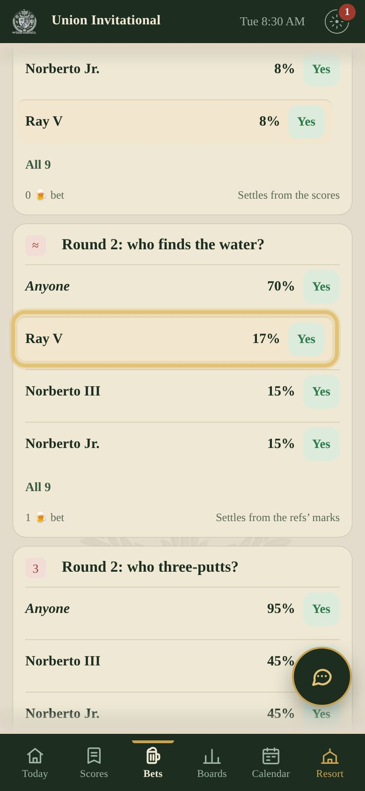
Pick your stake
- The names run along the top. Tap another to switch.
- Choose Yes or No, then your stake: − and + move a quarter at a time, or tap ¼, ½, 1 or 2.
- It shows what it pays if you’re right.
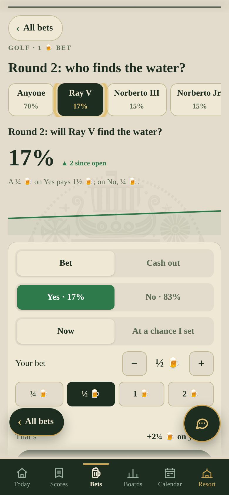
Place it
Tap the big button. Changed your mind later? Under Cash out, sell part or all of it for what it’s worth right then.
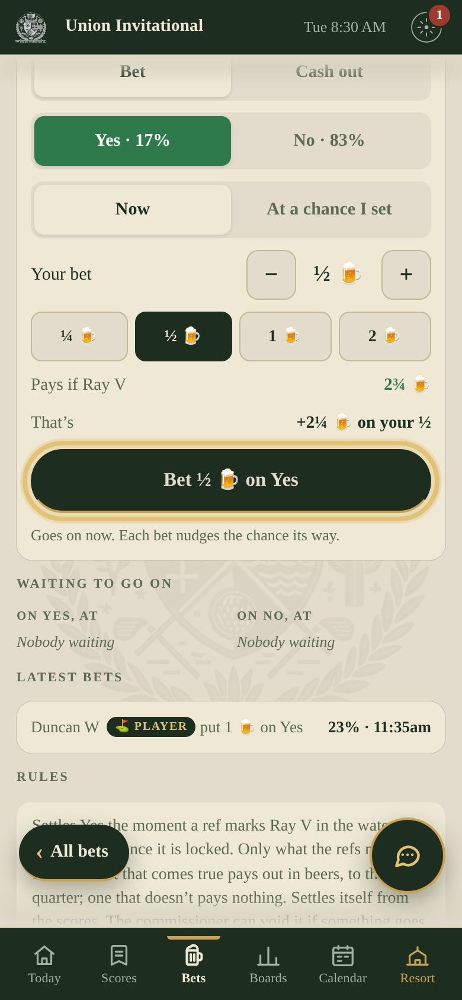
8Make your own bets
Yes or no, with people tagged
- In Bets, tap ＋ Make your own bet.
- Write the question, then tap who it’s about. They get a buzz.
- Pick how likely you think it is to start, then tap Open the bet.
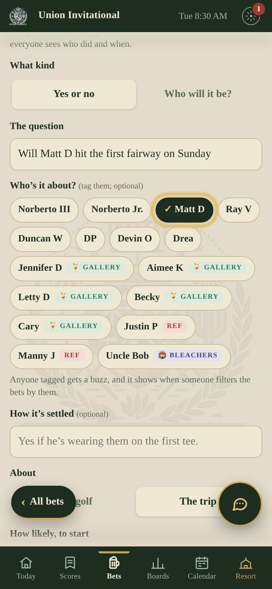
Or ask “who will it be?”
“Who sings first on karaoke night?” Pick the people as the answers. Each starts at an even chance, and the group’s bets move them. When it’s happened, you tap who it was.
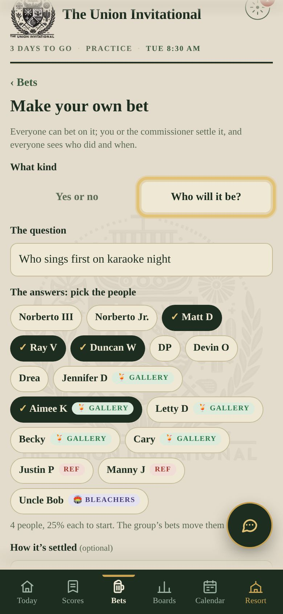
Your bets
Tap 🍺 · My bets at the top of Bets to see your beers, what’s open, what’s settled, and Cash out.
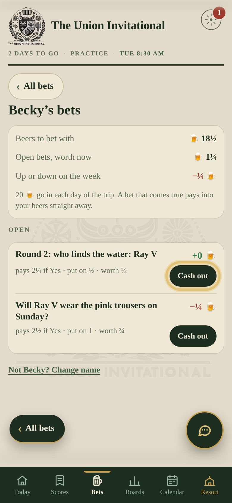
?Help
I forgot my PIN
Ask the commissioner. They can see everyone’s PIN, and can clear it so you can make a new one.
I picked the wrong name
Tap the top-right button, then Chat and bets as…, and choose again. A name that isn’t yours needs its owner’s PIN.
New phone, or I deleted the app
Open the book, tap your name and type your PIN. You’re back, with all your bets.
I’m a ref, or the commissioner
On the Who are you? window, tap Enter your PIN instead and use your scoring PIN, as before.
I didn’t get a notification
Turn it on in the chat (step 6). On an iPhone, open the book from its Home Screen icon, not Safari.